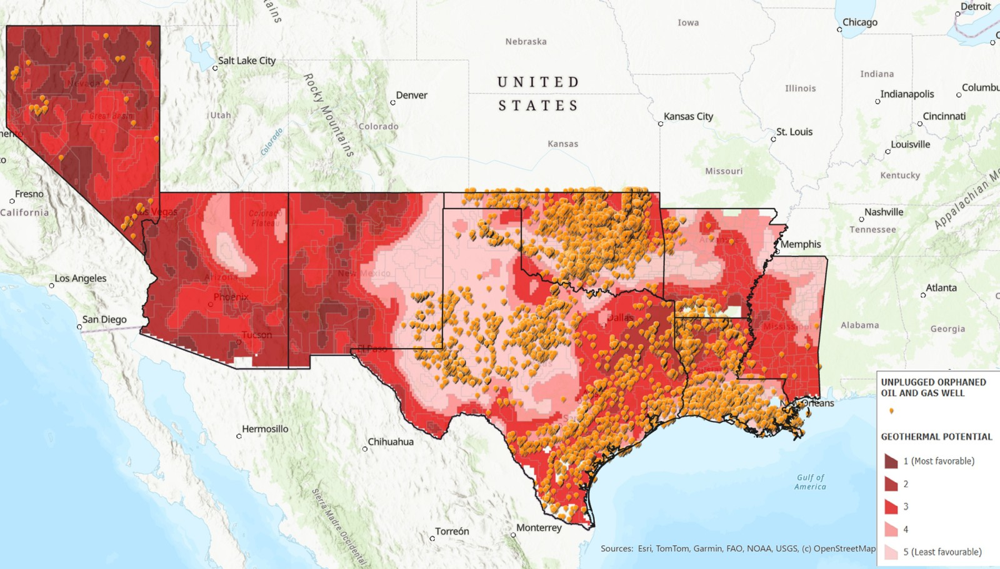

Alternative Energy Solutions
Giving oil and gas infrastructure a second life: orphaned wells as geothermal plants, and depleted reservoirs and saline rock as carbon dioxide stores.
- Completed
- 2020–2025
- Geothermal
- Carbon capture and storage
- Orphaned wells
- GIS
- Network optimization
![Two-panel illustration. Left, 'Old wells to geothermal power': a cross-section of ground that grows redder with depth, with a re-entered old oil or gas well carrying cool water down (blue arrow) and hot water up (red arrow) to a small geothermal power plant at the surface connected to the grid; capped orphaned wells stand nearby. A note reads: eight states, Nevada to Mississippi, 18,520 orphaned oil and gas wells; converting those on hotter ground could add about 4 GW. Right, 'Captured CO2 to storage underground': a power plant with a capture unit sends carbon dioxide through a surface pipeline to two injection wells, one reaching a depleted oil reservoir under a caprock seal and one reaching a deep saline formation. A note reads: Gulf case study, planning the pipeline network in six 5-year phases stored the same CO2 with 34% lower transport cost.](img/hero.png)
In plain English
A century of oil and gas production has left the southern United States with thousands of unplugged wells, depleted reservoirs and deep knowledge of what lies underground. This project asks how that legacy could serve cleaner energy. Two ideas run through it. Old wells already reach deep, warm rock, so converting them to geothermal power could skip part of the most expensive step, drilling. And porous rock that once held oil, along with deep saline formations, can hold carbon dioxide captured at power plants and factories.
The first study, published in 2022, came out of a U.S. Department of Energy Mickey Leland Energy Fellowship and work with developers of SimCCS, an open-source tool for planning carbon dioxide pipelines. It let a pipeline network grow in phases as sources and storage sites come and go. The second, published in Sustainability in 2025, mapped geothermal potential, orphaned wells, tribal lands and low-income HUBZones across eight states, asking where reused wells could bring power and investment to communities that need both.
Main points
- Both studies start from assets the oil and gas industry leaves behind and ask how they could be reused instead of abandoned.
- The geothermal work overlays public maps of underground heat, orphaned wells and communities, then turns the overlap into an estimate of technical potential.
- The carbon storage work uses network optimization to choose which sources, storage sites and pipelines to build, and when, as conditions change over a project's life.
- Communities stay in view: the geothermal study counts potential on tribal lands and in HUBZones, where federal programs can steer the benefits.
- The ideas carry forward into the lab's data center research, where designs built around geothermal power were the cheapest on-site options.
Interactive demoA second life for fossil-fuel infrastructure →
Papers
Legacy oil wells could anchor geothermal power on tribal lands
Jones, E.C., Jr., Munjurpet Sridharan, C., Aghapour, R., & Rodriguez, A. (2025). Re-energizing legacy fossil infrastructure: Evaluating geothermal power in tribal lands and HUBZones. Sustainability, 17(6), 2558. https://doi.org/10.3390/su17062558
In eight states from Nevada to Mississippi, hot rock overlaps tribal lands, HUBZones and orphaned oil wells, with over 2,300 GW of technical potential.
- Land at 120 °C or hotter in the study area holds an estimated 2,373 GW of technical enhanced-geothermal potential; for scale, the existing U.S. geothermal plants mapped in the paper total about 2.5 GW.
- About 766 GW of that potential lies in HUBZones and about 347 GW on tribal lands.
- The eight states contain 18,520 orphaned oil and gas wells, 7,163 of them in HUBZones; converting the wells on hotter ground could add about 4 GW, including 1.8 GW in HUBZones and 1.7 GW on tribal lands.
- Arizona, New Mexico and Oklahoma have the most tribal land on high-potential ground, while orphaned wells and tribal lands overlap mainly in Oklahoma and Louisiana.

Building CO₂ pipelines in phases makes carbon storage cheaper
Jones, E.C., Jr., Yaw, S., Bennett, J.A., Ogland-Hand, J.D., Strahan, C., & Middleton, R.S. (2022). Designing multi-phased CO₂ capture and storage infrastructure deployments. Renewable and Sustainable Energy Transition, 2, 100023. https://doi.org/10.1016/j.rset.2022.100023
Should carbon capture networks be built all at once or in stages? Planning in phases cut a Gulf case study's transport costs 34%.
- With identical data, splitting a 30-year project that stores 3 million tonnes of CO₂ a year into six 5-year phases cut total transport cost from $555 million to $363.65 million (34%); capture and storage costs were unchanged.
- The phased design starts with nearby source and storage pairs on 103 km of pipeline and reaches 378 km only in the final phase, while the single-phase design runs 333 km from day one.
- When the model captures only CO₂ that is profitable with 45Q credits of $50 a tonne (saline storage) and $35 a tonne (enhanced oil recovery), the phased design was 15% more profitable and stored 5% more CO₂.
- Phases also let planners represent sources and storage sites that come and go, changing tax credits, oil-price-driven CO₂ sales, staged financing and rising capture targets, which a static model cannot.
![Two bar charts comparing six 5-year phases of a phased CO2 pipeline design with a single-phase design. Left: pipeline network in use is 103 km in phases 1 to 3, 124 km in phase 4, 205 km in phase 5 and 378 km in phase 6, against a dashed line at 333 km for the single-phase design. Right: annual transport cost is 7.94 million dollars in phases 1 to 3, 9.51 in phase 4, 16.6 in phase 5 and 22.8 in phase 6, against 18.5 every year for the single-phase design. Over 30 years transport costs 555 million dollars single-phase versus 363.65 million phased, 34% lower.](img/paper-co2-capture-storage-phasing-2022.png)
- PaperRead the paper (open access)
- RelatedSimCCS (open source, by the SimCCS team, originally at Los Alamos): the pipeline-planning tool this paper extended. This public release (2020) is the single-phase version, not the paper's own code
- RelatedSimCCS 3.0 at Los Alamos, the current version, which includes a phase-based time mode (source code on request)
Code and materials
People
- Erick C. Jones Jr., PhD, PEPrincipal Investigator · SEAR Lab directorin
- Chandramouli Munjurpet SridharanAuthor, Sustainability 2025in
- Raziye AghapourAuthor, Sustainability 2025in
- Angel RodriguezAuthor, Sustainability 2025
- Sean YawAuthor, Renewable and Sustainable Energy Transition 2022
- Jeffrey A. BennettAuthor, Renewable and Sustainable Energy Transition 2022
- Jonathan D. Ogland-HandAuthor, Renewable and Sustainable Energy Transition 2022
- Cooper StrahanAuthor, Renewable and Sustainable Energy Transition 2022
- Richard S. MiddletonAuthor, Renewable and Sustainable Energy Transition 2022
Profiles marked in link to LinkedIn. More past and present lab members are on the SEAR Lab team page.